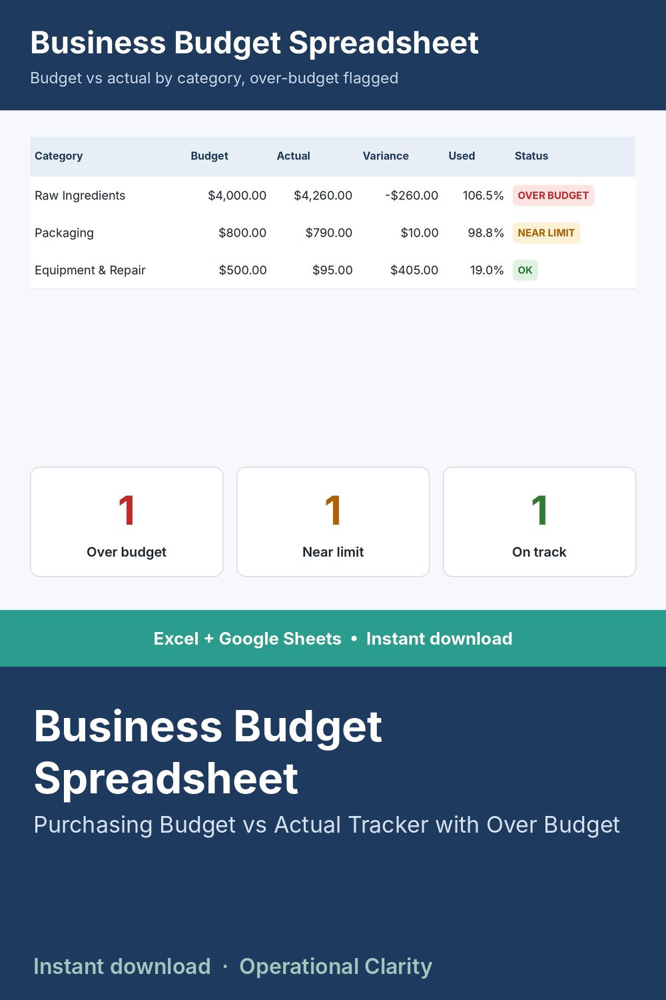

Business Budget Spreadsheet

STOP FINDING OUT YOU'RE OVER BUDGET AT MONTH-END.
Setting a purchasing budget only helps if you can see where you actually stand against it in real time. This sheet compares every dollar spent to what you budgeted, by category, as you go.
WHAT IT DOES
- Set a monthly purchasing budget per category
- Log every actual purchase against a category as it happens
- Automatically compares actual spend to budget and flags anything over or near its limit
WHAT'S INCLUDED
- Excel file (.xlsx) - works in Excel 2010 and newer, no macros, no add-ins needed
- Start Here tab with plain-English setup instructions
- Sample data included so you can see it working before you enter your own numbers
WHO THIS IS FOR
Small business owners and purchasing managers who set a budget every month and want to actually know if they're on track before the numbers come as a surprise.
INSTANT DOWNLOAD - no physical item will be shipped. Because this is a digital product, all sales are final.